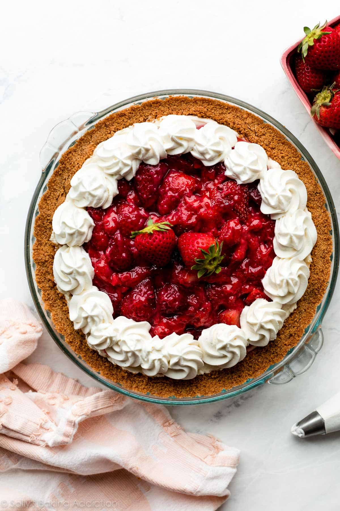

Strawberry Pie

About this dish
No lie, when I first tasted this summery strawberry cream cheese pie, I said out loud to an
empty kitchen: “Well this is the best pie I’ve ever had.” And, well, I’ve made many pies
before.
Ingredients
- 1 cup (240ml) cold heavy cream
- 8 ounces (226g) full-fat block cream cheese, softened to room temperature
- 1/2 cup (60g) confectioners’ sugar
- 1 teaspoon pure vanilla extract
- 1 teaspoon lemon juice
Steps
- Make the strawberry topping first so it can cool: Chop some of the strawberries until you have 1 cup, or 150–160 grams/5.5 ounces. Quarter the remaining strawberries (you should end up with about 3.5 cups, or about 500 grams/18 ounces, of quartered strawberries) and set aside until step 5. Lightly mash the chopped strawberries with a pastry cutter, potato masher, or a fork. Using a fork, mix the cornstarch and water together in a small bowl until the cornstarch has dissolved. Warm the mashed strawberries, cornstarch mixture, and sugar together in a small saucepan over medium heat. Cook until boiling, stirring often. Mixture will be cloudy. Boil 1 minute or until it’s thick like a jam (no longer liquid-y). Remove from heat, stir in the lemon zest, and cool completely. (Must completely cool, so transferring to a bowl out of the saucepan helps speed that up. Feel free to refrigerate it. You can complete a few other steps in the recipe as the mixture cools.)
- Make the filling: Using a hand mixer or a stand mixer fitted with a whisk attachment, whip the cold heavy cream into stiff peaks on medium-high speed, about 3 minutes. Set aside. Using a hand mixer or a stand mixer fitted with a whisk or paddle attachment, beat the cream cheese on medium speed until smooth and creamy. Scrape down the sides and up the bottom of the bowl with a rubber spatula as needed. Add the confectioners’ sugar, vanilla extract, and lemon juice and beat on medium-high speed until combined. Make sure there are no large lumps of cream cheese. If there are lumps, keep beating until smooth. Using your mixer on low speed or a rubber spatula, fold the whipped cream into the cream cheese mixture until combined. This takes several turns of your rubber spatula. Combine slowly as you don’t want to deflate all the air in the whipped cream.
- Assemble layers: Spread cream cheese filling into slightly cooled crust. Use an offset spatula to smooth down the top. Fold quartered strawberries into cooled strawberry mixture from step 1 and then spoon evenly on top of the cream cheese filling.
- Cover with plastic wrap or aluminum foil. I usually just carefully lay aluminum foil on top so the topping doesn’t get messed up. Refrigerate for at least 8 hours and up to 48 hours. The longer refrigerated, the better the pie will set up. Do not exceed 2 days because the topping begins to break down.